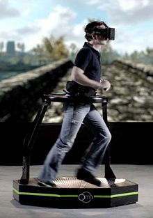
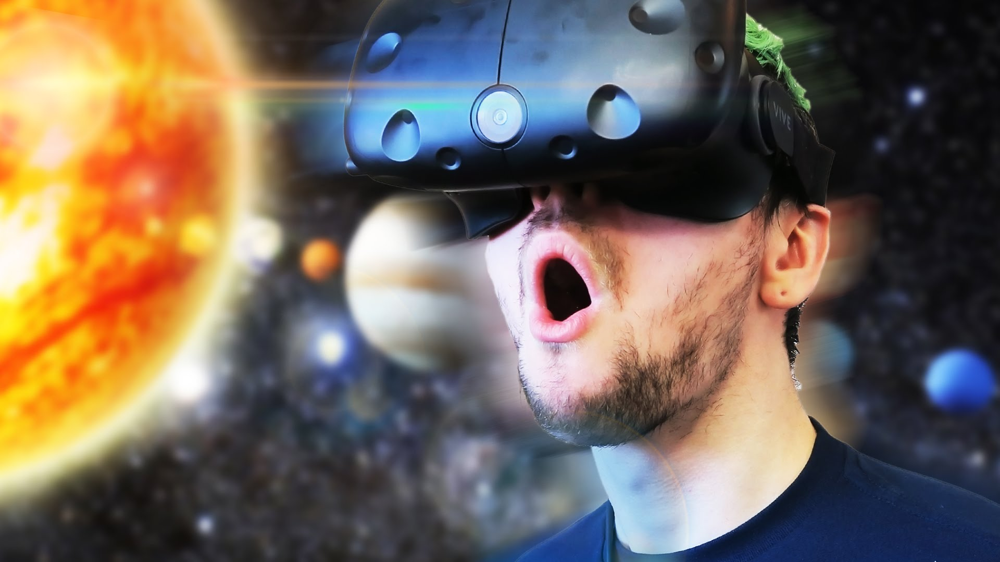

The Future of Virtual Reality:
Omni Technology
Introduction
Welcome to the future; a world where becoming fully immersed in other realities, timelines, and dimensions is all doable. This is a world where almost anything is possible. You can become fully immersed in a world that was previously a fantasy. Virtual reality technology, the reason these worlds can come to life, is a constant growing force that is taking over technological industries and taking on the world by storm.
Different Types of Virtual Reality Tech
The most commonly used and furthest developed virtual reality technology is generally found in the form of the infamous headset. Many examples of this take on bringing the virtual world to life are the Oculus Rift, Google Cardboard, and the Playstation VR. The issue with these amazing headsets are that they don’t allow the user to wholly experience the virtual world; they are very limited in how they are immersed in the digital universe.
Omni Technology: Their Contribution
The virtual reality company, Omni, however, integrates various different technologies allowing you to interact with the world around you in different ways. Their main project, the Virtuix Omni, allows the user to walk and run around in various games and simulations, replacing the classic controller or movement sensitive wands to navigate your way around different worlds. Their secondary project, the Hands Omni, also brings a lot of depth to the way we interact with various virtual objects in games. Omni continues to add a whole new layer of possibilities to the world of virtual reality by integrating technology that hones more of our five senses, allowing our hands and feet to become as immersed as our eyes are in these virtual paradises or battlefields.